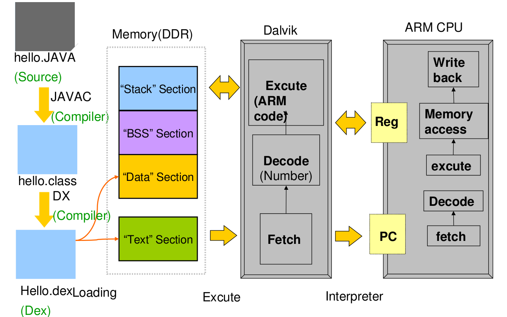

|

|
A compiled program is loaded by the DVM and unpacked.
Application memory is divided in various sections ( like the 8086 segments ).
-
Stack Section
-
Data Section
-
BSS Section
( A special Part of the data segment, for statically-allocated variables. )
-
Text Section
( A special segment for strings treatment
|